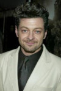

Roteiristas

Fran Walsh

Guillermo del Toro

J. R. R. Tolkien

Peter Jackson

Philippa Boyens
| Título | The Hobbit: An Unexpected Journey |
|---|---|
| Estreia | 14 de Dezembro de 2012 (Brasil) |
| Duração | 169 minutos |
| Paíes de origem | Estados Unidos da América e Nova Zelândia |
| Gênero | Fantasia e Aventura |
| Recomendação de idade | Não recomendado para menores de 12 anos |
| Diretor | Peter Jackson |
Fran Walsh
Guillermo del Toro
J. R. R. Tolkien
Peter Jackson
Philippa Boyens
Personagem: Ori
Adam Browm III
Personagem: Kili

Aidan Turner II
Personagem Gollum/Sméagol

Andy Serkis
Personagem Galadriel

Cate Blanchett